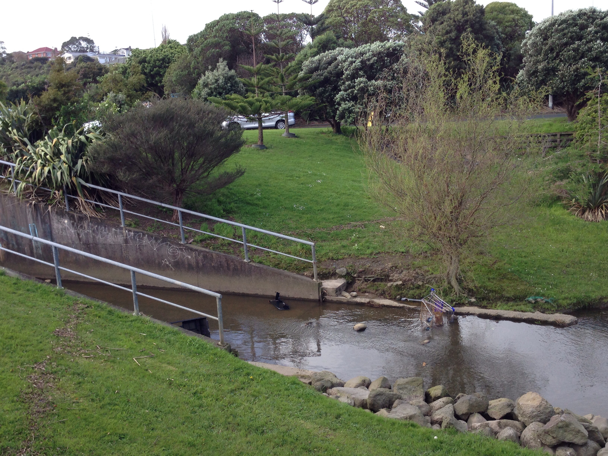
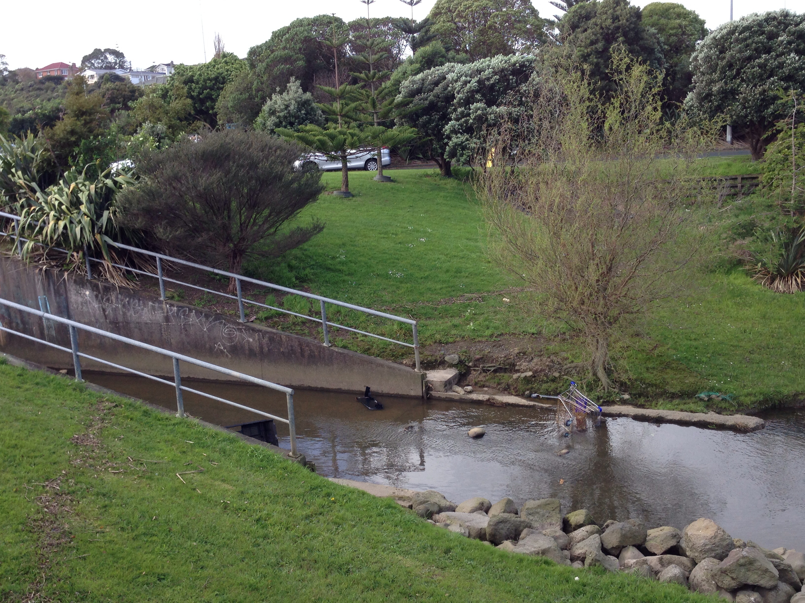
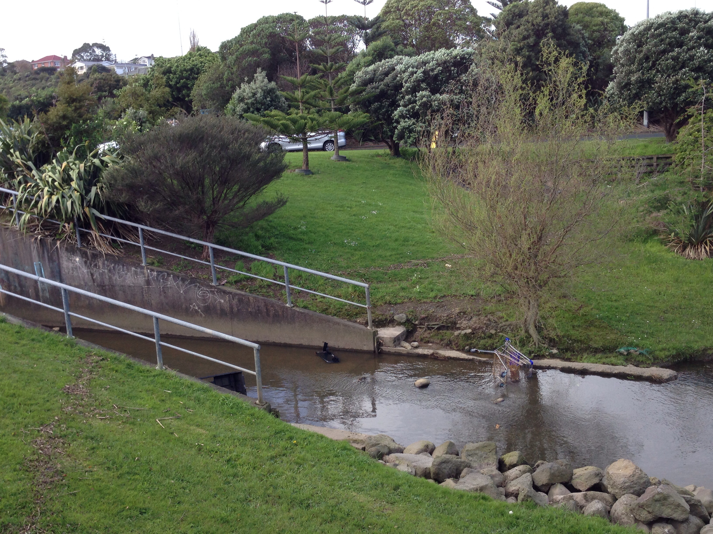
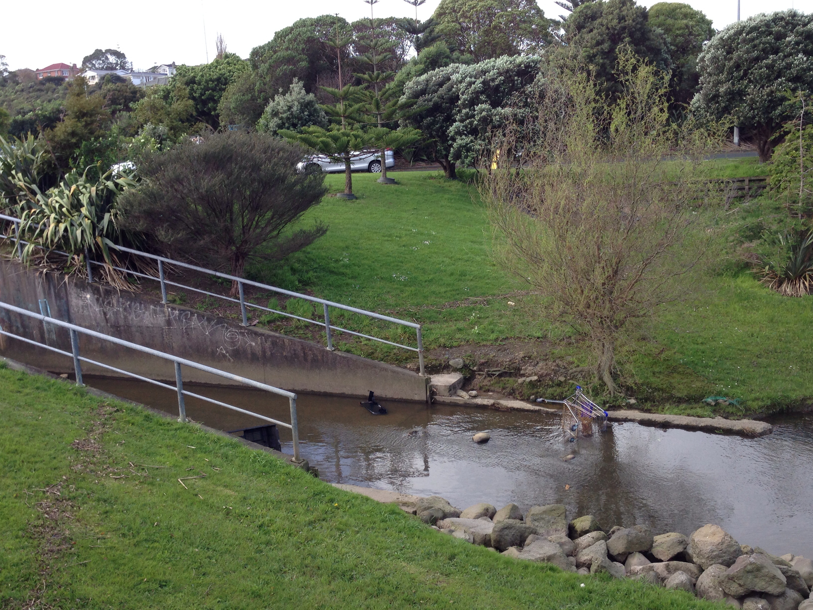
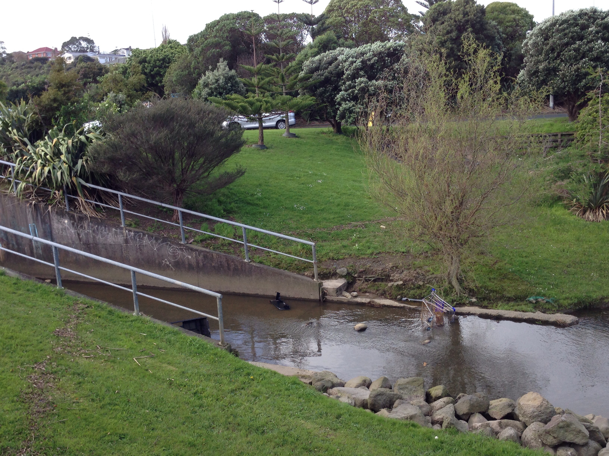

Toggle navigation
WAINZ
Home
Map
Submit
Gallery
Media
Contact
Information
Pollution
Resources
How to Help?
Facts
Login
Register
Login

 


![Whakamaru dam Waikato River pollution July 2013 -- Whakamaru Lake: On afternoon of 16th July (2013), I walked along the river trail track from the car park at the Whakamaru dam. There was a dreadful smell, so bad that I thought it should be checked out so I looked around. The stench got worse as I approached a spot where I discovered all this gunk built up in the water, collecting between the riverbank and a narrow floating pipeline. It's been since about last December that I've I walked along there and this mess certainly wasn't there back then so it must've built up fairly quickly. Shouldn’t that be cleared away?? This is undoubtedly polluting the Waikato River. It's pretty disgusting. Surely someone should be doing something to clean this up.](images/gallery/5.jpg "River") 
